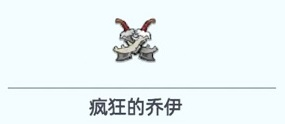

!兵力部署!
自己的城镇内只留射手 其余所有的盾兵和矛兵派到互防盟友的城堡内。
!英雄要求!
自己的城镇留最高战力英雄(在城墙-城墙防御-设置驻守英雄)
为了防止失误可勾选驻守英雄不可出征
派去搭档家的英雄搭配如下:帕特里克第一个位置，其他任选
!特殊波次!
第 10、20 波只攻击总部
驻防总部要不低于 4.5W的高级(7级及以上)盾和矛兵 让大车头先进
第7、14、17波的精英乔伊只攻击在线的领主
若失败2次就撤兵去支援未着火的高战。
着火后大家别着急灭火治疗，会降低分数，等活动结束再灭火。
不灭立省100钻石
敲黑板！划重点！
这个活动挂机也能得奖励哦！
----部署要求----
!兵力部署!
自己的城镇内只留射手 其余所有的盾兵和矛兵派到互防盟友的城堡内。
!英雄要求!
自己的城镇留最高战力英雄(在城墙-城墙防御-设置驻守英雄)
为了防止失误可勾选驻守英雄不可出征
派去搭档家的英雄搭配如下:帕特里克第一个位置，其他任选
!特殊波次!
第 10、20 波只攻击总部
驻防总部要不低于 4.5W的高级(7级及以上)盾和矛兵 让大车头先进
第7、14、17波的精英乔伊只攻击在线的领主
----特殊说明----
驻防对象或自己的城镇第一次防守失败可以及时发自己的城镇位置请求支援若失败2次就撤兵去支援未着火的高战。
着火后大家别着急灭火治疗，会降低分数，等活动结束再灭火。
不灭立省100钻石